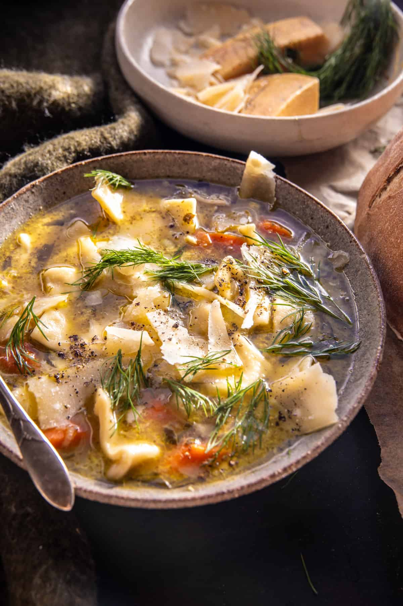

<!DOCTYPE html>
<html lang="en">
    <head>
        <meta charset="utf-8">
        <meta name="viewport" content="width=device-width, initial-scale=1.0">
        <link rel="stylesheet" href="../styles.css">
        <title>Chicken Alfredo</title>
    </head>
    <body>


    </body>
</html>

<!DOCTYPE html>
<html lang="en">
<head>
    <meta charset="UTF-8">
    <meta name="viewport" content="width=device-width, initial-scale=1.0">
    <title>Chicken Soup</title>
</head>
    <body>
        <a href="../index.html" style="display: inline-block; margin-left: 20px;"><h5>return home</h5></a>
        <div class="header">
            <h1>Chicken Soup</h1>
            <p><em>based on recipe from <a href="https://www.halfbakedharvest.com/pesto-chicken-noodle-soup/" target="_blank" rel="noopener noreferrer">Half Baked Harves</a></em></p>
            
        </div>
        <div class="content">
            <h2>Dish Description</h2>
            <p>
                This simple, healthy, Lemony Pesto Chicken Noodle Soup is the perfect winter soup to warm up with. A mix of shredded chicken and green vegetables simmered 
                with herbs, lemon, and classic egg noodles. Finish each bowl off with a sprinkle of parmesan and fresh dill. Serve this soup with crusty homebaked bread, 
                and you’ll have a delicious full meal. This soup is hearty, full of protein, vegetables, and nutrient-packed herbs – and so delicious. It’s the coziest bowl for any night. 
                Plus, the leftovers the next day make for the best lunch!
            </p>
            <h2>Ingredients</h2>
            <p><em>serves 6 people</em></p>
            <ul>
                <li>2 tablespoons extra virgin olive oil</li>
                <li>2 tablespoons salted butter</li>
                <li>1 yellow onion, chopped</li>
                <li>2 shallots, sliced</li>
                <li>6 cloves garlic, chopped</li>
                <li>4 ribs celery, chopped</li>
                <li>6 carrots, chopped</li>
                <li>2 tablespoons fresh thyme leaves</li>
                <li>1 tablespoon chopped fresh rosemary</li>
                <li>1 teaspoon crushed fennel</li>
                <li>salt and black pepper</li>
                <li>8 cups chicken bone broth</li>
                <li>1 pound boneless chicken breasts or thighs</li>
                <li>2 cups chopped broccoli florets</li>
                <li>1/2 cup basil pesto</li>
                <li>2 cups baby spinach, chopped</li>
                <li>2 tablespoons lemon juice</li>
                <li>2-3 cups egg noodles</li>
                <li>1/4 cup chopped parsley</li>
                <li>parmesan and fresh dill, for serving</li>
            </ul>
            <h2>Instructions</h2>
            <ol>
                <li>
                    Melt together the olive oil and butter In a large Dutch oven over medium heat. 
                    Add the onions and cook 3-5 minutes. Add the shallots, garlic, celery, carrots, thyme, rosemary, and fennel.
                    Season with salt and pepper. Cook another 5 minutes. 
                </li>
                <li>
                    Pour in the broth and bring to a boil over high heat. Stir in the chicken and broccoli, and if you have one – a parmesan rind. 
                    Cover and cook for 20 minutes, until the chicken is cooked through. At this point, the soup can also simmer on low for up to 4-6 hours.
                </li>
                <li>
                    Shred the chicken and remove the parmesan rind. Stir in the pesto, spinach, and lemon. Taste, and season with salt and pepper. 
                    Bring the soup back to a boil, then add the noodles and cook 6-8 minutes, until soft. Stir in the parsley.
                </li>
            </ol>
        </div>
    </body>
</html>